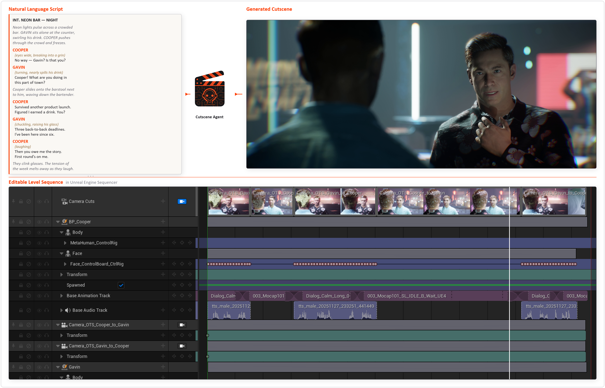
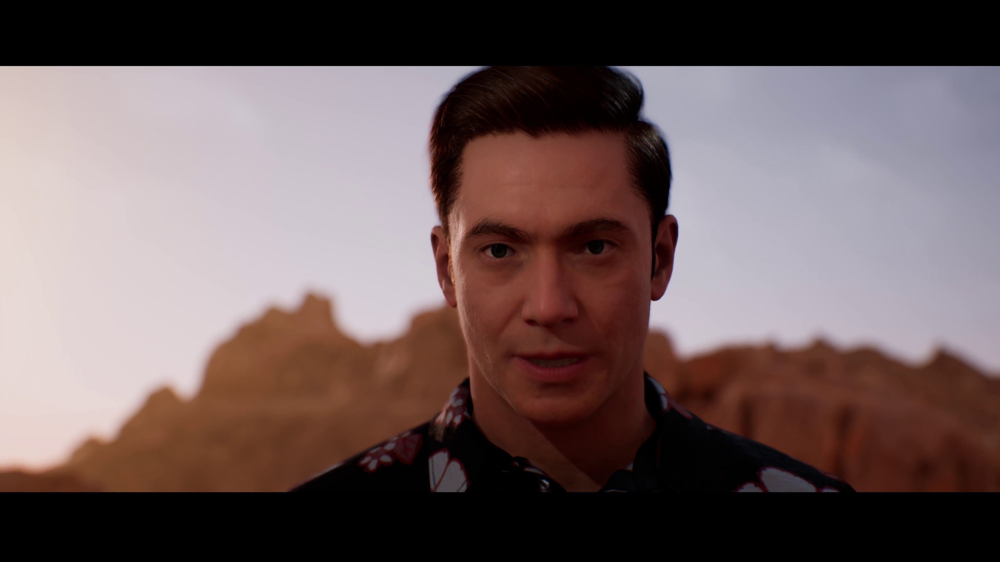
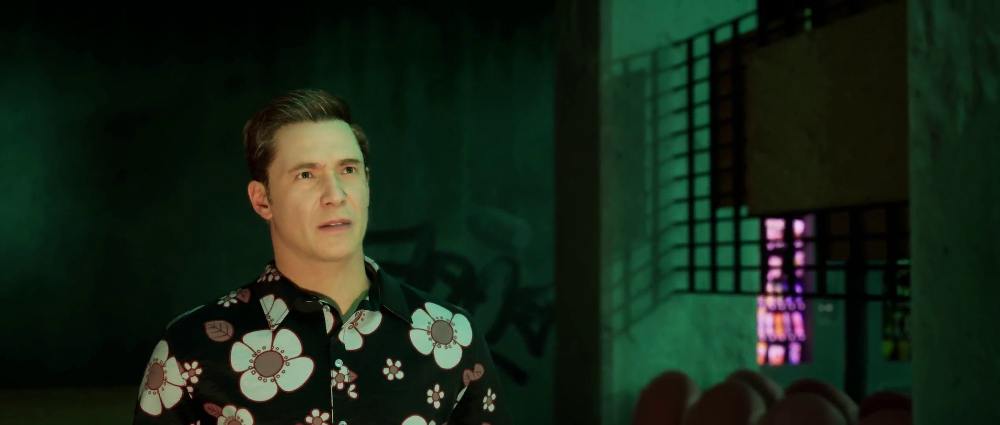
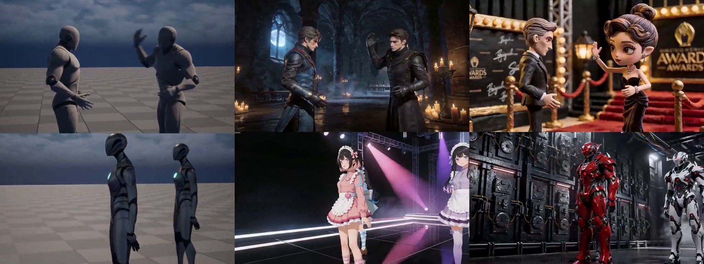

An LLM Agent Framework for Automated 3D Cutscene Generation
Transform natural-language scripts into fully editable Unreal Engine cutscenes — with coordinated character animation, dialogue, and cinematography — in minutes, not weeks.

Cutscenes are indispensable components of modern video games, serving as the primary vehicle for narrative delivery and emotional engagement. However, cutscene production remains one of the most complex workflows in digital content creation. We present Cutscene Agent, an LLM agent framework that automates end-to-end cutscene generation — transforming natural-language scripts into industry-grade, editable Unreal Engine Level Sequences with coordinated character animation, cinematography, dialogue, and sound design.
A comprehensive MCP-based interface library for bidirectional LLM–Engine integration. Agents invoke engine operations and observe real-time scene state — enabling closed-loop generation of editable, engine-native cinematic assets.
A director agent orchestrates specialist subagents for animation, cinematography, and sound. A closed-loop visual reasoning mechanism enables agents to perceive rendered frames and iteratively refine camera composition and staging.
The first benchmark targeting long-horizon, interdependent tool-use evaluation for cinematic generation. Each scenario requires coordinating dozens of dependent tool calls across a three-layer assessment — from tool-call correctness to structural integrity to final cinematic quality.
A director agent interprets natural-language scripts via a prompt & context manager, delegates to specialist subagents (animation, camera, sound), and interacts bidirectionally with Unreal Engine 5 through an MCP-based cutscene toolkit — producing fully editable Level Sequences with a visual feedback loop for iterative refinement.
The following demo videos are automatically generated using Opus 4.6 + Cutscene Agent. Characters shown are MetaHuman assets; lighting and rendering are done by artists.

Cooper and Gavin run into each other at a bar on Friday night. They have a lighthearted conversation, catching up on each other's work, warmly asking about each other's families, and finally deciding to grab a drink together to celebrate the weekend.
"Why did you go to the police? Why didn't you come to me first?"
[calm, probing, seated in shadow]"What do you want of me? Tell me anything, but do what I beg you to do."
[desperate, leaning forward]"That I cannot do."
[quiet refusal, unmoved]"I'll give you anything you ask."
[offers payment immediately, almost pleading]
Artifacts generated by Cutscene Agent can be used as control conditions for video generation models, enabling more precise camera control.

Several frontier LLMs evaluated across 65 scenarios on CutsceneBench's three-layer hierarchy
Narrative & Cinematic Quality — LLM-as-Judge on rendered video
* Equal Contribution